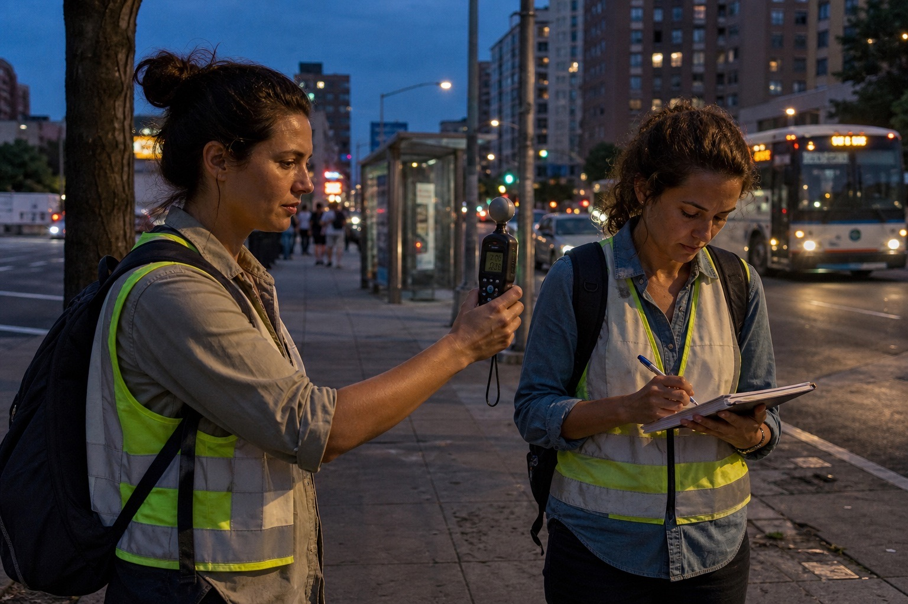

Working paper · CH–WP–01
Heat after dark: mapping the unequal night-time city
This study combines street-level temperature readings, building form, transit access, and resident diaries to examine where heat persists after the sun sets—and which public responses remain available after hours.
Read the research summary →